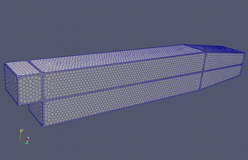
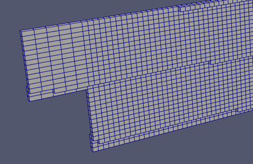
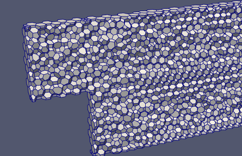
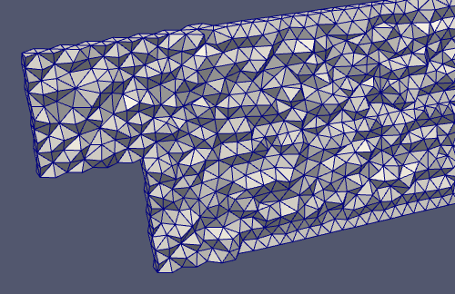
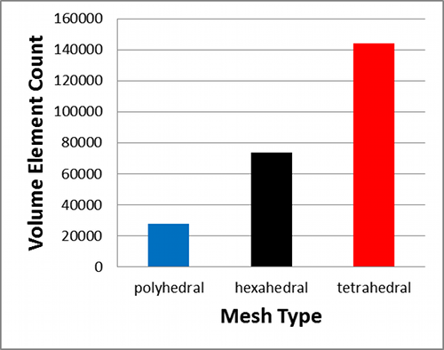
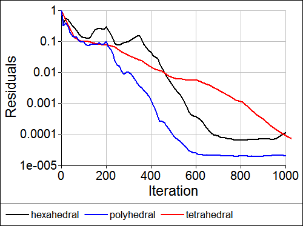
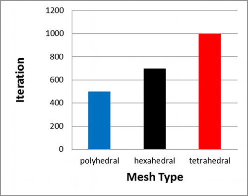
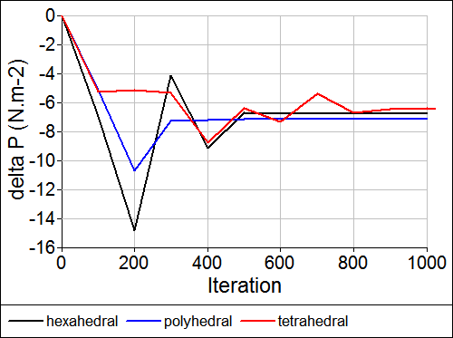
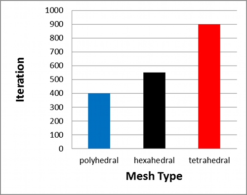
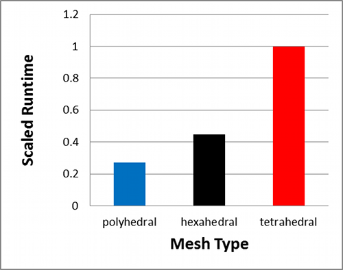

Polyhedral, Tetrahedral, and Hexahedral Mesh Comparison
Are you wondering how a polyhedral (dual) mesh compares to the equivalent tetrahedral and hexahedral meshes? Then you're in the right place. This study compares the volume element count, convergence, accuracy, and runtimes of the three different types of meshes for a simple duct.
Polygon Surface Mesh: Backward facing step in a duct
This study focuses on a 3D backward facing step within a duct. The duct geometry was decomposed into 6-faced blocks so it could support a hexahedral mesh as well as the more general tetrahedral and polyhedral meshes.
Meshes
Slices through the meshes revealing volume elements are shown below.
Hexahedral Volume Elements
Polyhedral Volume Elements
Tetrahedral Volume Elements
The polyhedral mesh is derived directly from the tetrahedral mesh by forming polygons around each node in the tetrahedral mesh.
Volume Element Counts
Convergence
The pressure residual for each mesh type is shown below.
Pressure Residuals Monitor
The solution on the polyhedral mesh produced the lowest absolute residual value.
The number of iterations for each mesh type to reach the same level of convergence (1x10-4) for the pressure residual are shown below.
Pressure Residual Convergence
Accuracy (Pressure Drop)
The pressure drop for each mesh type is shown below.
Pressure Drop Monitor
While there are minor differences in the converged pressure drop the simulations are in broad agreement on the overall value.
The number of iterations for each mesh type to reach a steady state value for the pressure drop are shown below.
Pressure Drop Convergence
Runtime
Assuming our goal is to reach the steady state pressure drop for each simulation, then the runtimes (scaled against the slowest simulation) are shown below.
Runtimes
Conclusions
Cleary this study shows that polyhedral cells hold great promise in producing equivalent accuracy results compared to other mesh types with the added benefits of:
- Faster converge with fewer iterations
- Robust convergence to lower residual values
- Faster solution runtimes
Feedback
Questions? Ideas? Problems?

Comments
Caedium v5 will Create Polyhedral Meshes
In the next release of Caedium there will be an option to convert tetrahedral meshes to polyhedral meshes. For more details see "Caedium v5 Sneak Peek: Polyhedral Meshes Improve CFD".
Validate such claim with experimental data
Please validate the simulation results with experimental data. Residual monitoring does not mean that the result is correct.
Pressure monitor indicates similar results
The residual monitor is included for reference, it's not intended to validate the results. The pressure monitor is the indicator that the results are similar for all cases and therefore for that level of accuracy the conclusions hold true.
The pressure monitoring is
The pressure monitoring is not correct. Experimental data is still needed. For example, polyhedra and tetra deviate alot from real data in comparison to hexa in swirling flow.
Quality of Convergence for different meshes
What you show is interesting, and targets a questions I have been asking recently.
It is my experience that the velocity field converges more slowly than the pressure field, and that finding the converged solution for the velocity field dominates the solution time for benchmarks like the one you have shown.
Can you please show the convergence rate for the velocity field for the hex, tet, and polyhedrals meshes?
References
"polyhedra and tetra deviate alot from real data in comparison to hexa in swirling flow"
Do you have references you can share?
Pressure residual is the slowest to converge
"It is my experience that the velocity field converges more slowly than the pressure field"
Typically I see the pressure (field) residual is the slowest to converge for the pressure-correction (segregated) solver used in this study, so that is why I only showed the pressure residual for clarity.
Here's the paper title for
Here's the paper title for swirling flow. refer to page 4 for mesh density and page 8 for experimental validation.
"TURBULENCE MODEL ANALYSIS OF FLOW INSIDE A HYDROCYCLONE"
it can be seen that tetra performs a lot worse than hexa eventhough the mesh density for the former is 10% higher than the latter as on page 8 (bottom two plots).
I can't recall the paper for polyhedra though. I will update you once I get hold of the paper.
I am a PhD student dealing with swirling flow btw. any deviation greater than 10% is not acceptable as portrayed by tetra.
Hi, did you find the paper
Hi,
did you find the paper regarding polyhedral mesh?
I am using tet for my swirling flow simulation now as there are baffles blocking the generation of hex mesh. I would like to know if polyhedral mesh is better than tet in this situation.
Thank you in advance.